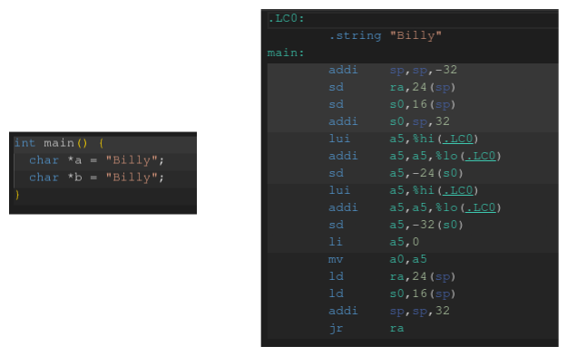

Hashmap
Introduction
A hashmap is a data structure that gets a ton of use, but its implementation can be a bit of a black box. This is further complicated by the face that even language to language a hashmap does not have the same implementation. Some hashmaps choose to preserve the ordering of insertion (Python, V), others have different maps for unordered and ordered (sorted) storage (C++), and yet others differ on their choice of backing storage (arrays vs trees). Even among those that use an array for storage, there are 2 different ways to manage collisions.
The actual implementation shouldn’t matter for the majority of users, as they just want to treat it as a fast key-value store. Yet the speed of our hashmap is something that can be greatly impacted by our choice of collision resolution.
Includes
#include <stdint.h> // uint64_t int64_t size_t #include <stdio.h> // Printing (not necessary as a library, just for testing) #include <stdlib.h> // Lots #include <stdbool.h> // True/False #include <string.h> // Nice to have string functions in C #include "hashmap.h" // Our own header file
Header
I will be mixing the entire code for our hashmap throughout the article, to break up the reading, and to make I show you the code that goes along with the thought. Having this header file will ensure that even if our code is out of order, the compiler will be able to make sense of it.
#pragma once #include <stdint.h> #include <stdbool.h> #define TOMBSTONE UINT64_MAX #define STR_BUF_LEN 64 bool is_prime(int); int next_prime(int); typedef struct { void *key; uint64_t value; } pair; // Pretty Printing Functions, char[STR_BUF_LEN] max output // Can be used to define a custom print function for more complex datatypes typedef void (*print_function)(char*, void*); void unsigned_print(char*, void*); void signed_print(char*, void*); void double_print(char*, void*); void address_print(char*, void*); void string_print(char*, void*); // Hashing Functions typedef uint64_t (*hash_function)(void *); uint64_t no_hash(void *); uint64_t basic_hash(void *); uint64_t fnv_hash(void *); uint64_t fnv_string_hash(void *); // Equality Functions typedef bool (*equals_function)(void*, void*); bool value_equals(void*, void*); bool str_equals(void*, void*); //Hashmap typedef struct { float load_factor; int capacity; int size; int collisions; hash_function hash_func; equals_function equals_func; pair *array; } hashmap; hashmap hashmap_init(hash_function, equals_function, float, int); void hashmap_free(hashmap*); pair *hashmap_find(hashmap*, void*); pair *hashmap_first_avail(hashmap*, void*, int*); void hashmap_resize(hashmap*, int); void hashmap_insert(hashmap*, void*, uint64_t); uint64_t hashmap_get(hashmap*, void*); uint64_t hashmap_delete(hashmap*, void*); void hashmap_print(hashmap*, print_function, print_function);
Architecture
When we store our hashmap in an array each key should ideally map to a unique index in that array. Of course this will likely never happen even with the best hashing function in the world. So we have to find a balance of the best hashing function we can afford within our time constraints. There are many examples of hashing functions that can be used, but in our case we are trying to find a hash function that can take in a pointer (void*) and hash that 8 byte value which we can use as our index.
For the purposes of experimentation and extensibility we are going to allow our implementation to take a function pointer to a hash function. This way we can check the speed and collision rate with various different hashing methods.
Hashing
uint64_t no_hash(void *pointer) { return 0; }
Our first hash function is more of a nice to have during testing as opposed to an actually useful hashing function. It is quite fast however 🤓. We will later use this to test how our hashmap handles the case where multiple elements produce the same hash, and since they will all produce 0 this is a great way to test that.
uint64_t basic_hash(void *pointer) { return (uint64_t)pointer ^ ((uint64_t)pointer >> 32); }
Our first real hash function is relatively simple, it XORs the bottom half and the lower half together and returns the result. Not the best hash function, but with only 2 instructions it is about as quick as we can get without returning a constant value.
uint64_t fnv_hash(void *pointer) { if (!pointer) { return 0; } // Prime and offset basis values for 64-bit values uint64_t hash = 14695981039346656037ull; uint64_t byte_pointer = (uint64_t)pointer; for (int i = 0; i < 8; i++) { hash *= 1099511628211; hash ^= byte_pointer & 0xFF; byte_pointer >>= 8; } return hash; }
The second hash function is much more complex, and we should expect a lower rate of collisions because of this. Even with added complexity the actual function should still be fairly quick to compute. This is something we will be able to measure once our hashmap is fully implemented.
Basic Hash Original: 0x5589081942a0 | Hashed: 0x558908191729 Original: 0x5589081942c0 | Hashed: 0x558908191749 Original: 0x5589081942e0 | Hashed: 0x558908191769 FNV Hash Original: 0x5589081942a0 | Hashed: 0x6fb6159253d2b95a Original: 0x5589081942c0 | Hashed: 0x63c1db2f83d3da3a Original: 0x5589081942e0 | Hashed: 0xe114c79be4e359a
For a first test I made 3 pointers just like you might when making 3 C-style strings. These values are on the stack, so they are all just a few bytes apart, which is a great test for our hash functions. There is a term called the avalanche effect in which a single bit change in the value to be hashed produces a very large change in the resulting hash. In order for our hash function to minimize collisions we should choose a function that has a very high avalanche effect.
Our more basic hash function does nothing to the upper 32 bits, and the lower 32 bits only differ by their second hexadecimal digit. This may not be that big of an issue with a large table, but a smaller table may expose some issues.
Our last hash is called an FNV hash, which produces vastly different has values from small differences in input values. It works by starting with a base seed, then apply 2 transformations to this seed per byte in our input number.
We also have a string hashing function that is based on the original FNV hash, just adapted to using the bytes of a string as opposed to the bytes of a number.
Hashing Speed
As we have just seen, hashing is its own complex topic, but for our case we are concerned with fast, non-cryptographic hashes. We have 4 potential hash functions, so we can take a look at their speed differences in code.
#include <time.h> #include <stdlib.h> #include <stdio.h> int main(){ struct timespec start, end; clock_gettime(CLOCK_MONOTONIC, &start); for (int i = 0; i < 64000; i++) { // Perform hashing here } clock_gettime(CLOCK_MONOTONIC, &end); double elapsed_time = (end.tv_sec - start.tv_sec) * 1000.0 + (end.tv_nsec - start.tv_nsec) / 1e6; printf("Time: %.3f milliseconds\n", elapsed_time); }
| No Hash | Time: 0.049 milliseconds |
| Basic Hash | Time: 0.055 milliseconds |
| FNV Hash | Time: 0.871 milliseconds |
| FNV String Hash | Time: 0.678 milliseconds |
Here are the results of hashing the same value 64000 times. As expected the first 2 hash functions are very quick, at the cost of a less effective hash, and the FNV hashes are significantly slower.
Let’s now take a look at how data is stored in a hashmap, so we can see why our choice of hashing function may impact the speed of our data structure.
Storage and Retrieval
How does a hashmap actually store the data we want to retrieve?
At first, it seems like it would make sense to just store the value, since we know that its key will only ever map to one index. However, this quickly falls apart when collisions come into the picture. If all of our “boxes” just stored the values we would have no way to tell them apart in case of a collision. Instead, we store elements as a pair of their key and value.
The structure of this pair is not as important to our implementation, and may vary from language to language. We will use a struct here, python may use a tuple, others may use a class. The point here is that we need our elements to be either a fixed size, or something we can point to in memory. Our struct will contain two 8-byte values, totaling to a 16-byte struct.
typedef struct { void *key; uint64_t value; } pair;
With each element wrapped up in a struct we can easily probe along and find when our key matches, or with separate chaining we will walk the linked list until we find our desired key. Due to our hash being a pure function, we know that our resulting index and probing order will always be the same for any given key. This means if we do not find a match, we know with 100% certainity that the key is not present in our map.
// Returns TOMBSTONE if element is not found (marker element) // returns value if found uint64_t hashmap_get(hashmap *h, void *key) { if (!h) { fprintf(stderr, "Not a valid hashmap, did you init it?"); exit(EXIT_FAILURE); } if (!key) { fprintf(stderr, "Attempting to get with a NULL key"); exit(EXIT_FAILURE); } pair pair_ptr; uint64_t index = h->hash_func(key) % h->capacity; for (int i = 0; i < h->capacity/2 + 1; i++) { uint64_t new_index = (index + (i * i)) % h->capacity; pair p = h->array[new_index]; switch ((uint64_t)p.key) { case 0: return TOMBSTONE; default: if (p.key == key) { return h->array[new_index].value; } } } }
This is our introduction to the main strategy we will use throughout the hashmap to find an element. Our first step is to rehash the key, then we follow the a quadratic probing sequence, which we will cover in more depth soon. At each step in our check we look for equality on our keys, which just compares 2 void* values, not the values they may or may not point to.
Backing Storage
Lets now look at how we can initialize our hashmap, and eventually clean up the memory is uses.
// `hash` is any hash function that takes a `void*` and returns a `uint64_t` // Set `load_factor` to `0` for default value // Set `size` to `0` for default value hashmap hashmap_init(hash_function hash, equals_function eq, float load_factor, int capacity) { if (!hash) { fprintf(stderr, "Please specify a valid hash function\n"); exit(EXIT_FAILURE); } if (!equals_function) { fprintf(stderr, "Please specify a valid equald function\n"); exit(EXIT_FAILURE); } if (!load_factor) { load_factor = 0.5; } if (!capacity) { capacity = 11; } pair *array = calloc(capacity, sizeof(pair)); if (!array) { perror("calloc failed"); exit(EXIT_FAILURE); } return (hashmap){load_factor, capacity, 0, 0, hash, eq, array}; } // Frees all dynamically associated memory with a hashmap // the hashmap becomes invalid after calling free void hashmap_free(hashmap *h) { if (!h) { return; } free(h->array); h = NULL; }
Don’t worry too much about the ability to pass in a hashing function, or an equals function for now. We will discuss those later. For now let’s focus on the memory allocation, for which I prefer to use calloc. I find working with zereod our memory to not only be safer, but faster to catch any errors in my algorithms. If the user passes a specific capacity we use that, otherwise we set it to a reasonable prime number.
Once the user is done with the hash map we need some way to clean up all the memory that it occupies. Since we are focusing on an open addressing implementation we only need to free the memory allocated for our array. The last thing here is to set the hashmap itself to NULL, this is a good idea when cleaning up our hashmap, as the rest of our user facing API will be setup to fail if the hashmap is NULL.
One of the main characteristics of a hashmap is its O(1) insertion and retrieval time. If you’re familiar with an array we know that insertion and lookup with a known index is constant time, but forcing our users to keep track of every last index would be quite a pain. This is where a hashmap comes in. Instead of having users keep track of specific indexes, or performing a search to find a specific element, we will combine the backing storage of an array and a hashing function to figure out where each item should be placed.
This is great because adding an item to an array is as simple as adding an offset to a pointer and writing to some memory, which runs at a constant time, no matter the amount of elements. We load a value into a register, and store it with a known offset into the array. Even in RISC-V assembly we only have 2 instructions to store our value.

In order to get the index for each element, we have to somehow reduce its value down to our array size. The hash functions return uint64_t values, which are much larger than our table indexes allow. The easiest way to “clamp” this hash value to our array is with a modulo operation. This allows us to take a value in the billions, and reduce it down to any table size. If our array has a size of 14 let’s see what indexs our different hash functions product.
Basic Hash Hashed: 0x55e8f951e748 | [14]Array Index 6 Hashed: 0x55e8f951e728 | [14]Array Index 2 Hashed: 0x55e8f951e708 | [14]Array Index 12 FNV Hash Hashed: 0xa7130ebc6001a9f8 | [14]Array Index 4 Hashed: 0x5c21814efdd7ab98 | [14]Array Index 12 Hashed: 0x9eb867d5a95e6e38 | [14]Array Index 4
Huh. Even our more advanced hash function, with vastly different values, ends up producing the same index twice. Well that’s not good for our users, if they try to store 2 different values we would end up overwriting the first value. We can continue to increase our array size to limit the amount of collisions, but we reach a point where we end up with numerous empty spaces.
Load Factor
So we know we need an array to store our elements, but how big should our array be? Well, it will need to have a concept of how full it can get before resizing. Of course if we made an array that is as long as a uint64_t could address we would have the fewest number of collisions. Or we could have a tiny array, with an element occupying every single index. The former wastes a lot of memory, and the latter would require reallocation on every insert.
This is where our “load factor” comes in to play. Load factor describes the ratio between the number of elements in the hashmap, and the total capacity of the hash map. We should aim for a load factor that maximizes “fullness”, and minimizes the chance of collisions. This is impacted greatly by the choice of hash function, so we will allow this to be tunable in our implementation.
If a user is not concerned about memory usage they can choose a very low load factor (0.1-0.2), that will almost entirely eliminate that chance of collisions. Most users would likely choose a value around 0.5, which we will later see produces a pretty good balance.
You may notice that even with a low load factor we can still have collisions, so how do we handle this?
Insertion and Collision Resolution
We will cover 2 different groups of strategies when it comes to resolving collisions in a hashmap.
Open Addressing
Linear Probing

In open addressing when 2 elements map to the same index we simply move to a different index to store that element. This process continues until we find an empty space, and we store the element there. The example above uses linear probing, in which the index is increased by 1 as we search for an empty space. This is in contrast to quadratic probing, where the index is increased by n2, where n is the number of collisions we have encountered. Increasing by a larger amount spaces the elements out more, and decreases the chances of collisions.
Quadratic Probing

An interesting thing to note with quadratic probing is its ideal conditions. Quadradic probing performs best when using a prime number table size, and a load factor < 0.5. In these conditions quadratic probing will not only always find a valid position, it will also do it in size/2 jumps. When we go to implement our hashmap with open addressing later we will see if we can ensure that both of these conditions are always met.
Double Hashing
There is one more type of open addressing called double hashing. Without a collision this strategy performs exactly the same as before, but when we run into a collision we do something new to try and resolve that. Instead of increasing our index by a consistent pattern we introduce a second hash function that is called for each collision.
Double hashing has some advantages, but it is very reliant on choosing a good hash function. The hash function must ensure that every index of the table is explored, otherwise this offers no advantages over other probing strategies. It also must never return a value of 0, as this would stall probing and thus stall the program it is being used in.
With that being said, double hashing would be a good strategy to explore if it fits your data, and you can tolerate the cost to compute another hash at each step of probing.
Our implementation is going to use quadratic probing, so let’s take a look at one way our insert function can look. Don’t worry about the messy code for now, we should just try and understand the basics.
void hashmap_insert(hashmap *h, void *key, uint64_t value) { if (!h) { fprintf(stderr, "No a valid hashmap, did you forget to init it?"); exit(EXIT_FAILURE); } if (!key) { fprintf(stderr, "Attempting to insert a null key"); exit(EXIT_FAILURE); } pair new_pair = {key, value}; // Find if the pair already exists pair *pair_ptr; // Set to NULL if it doesn't exist uint64_t index = h->hash_func(key) % h->capacity; for (int i = 0; i < h->capacity/2 + 1; i++) { uint64_t new_index = (index + (i * i)) % h->capacity; pair p = h->array[new_index]; switch ((uint64_t)p.key) { case 0: pair_ptr = NULL; case TOMBSTONE: continue; default: if (p.key == key) { pair_ptr = &h->array[new_index]; } } } // Pair already exists if (pair_ptr) { *pair_ptr = new_pair; return; } // Pair does not yet exist if (((float)h->size + 1) / (float)h->capacity > h->load_factor) { // We are over capacity hashmap_resize(h, 0); hashmap_insert(h, key, value); return; } h->size++; *pair_ptr = new_pair; }
The core of our insert logic is finding where this pair belongs. From there we just have to check if we need a new pair, or if we can update an existing one. Our only check here is that we do not push our hashmap over the desired load factor, and if we do, we handle it. Of course, don’t forget to increase the size when we sucessfully insert an element.
Separate Chaining
The other main strategy to resolve collisions in a hashmap is separate chaining.

Elements themselves are not stored directly in the array, instead each index in the array serves as the head node of a linked list which stores all collisions in a chain. At first separate chaining may look more complicated to implement, but it is much easier when it comes to writing the code. For this reason we will write our implementation to use open addressing, as it is a more challenging problem to solve.
When we go to insert an element all we have to do is make our new node point to the old list, and make our head node point to the new element. This handles both the case where the list is empty, and where the list has elements. Lookup works in much the same way, we go to the index and walked the linked list searching for the element, and if we find it we return it.
Speed Considerations
As you may have noticed with open addressing, collisions increases the time it takes to find an element if we have a high number of collisions. Separate chaining runs into the same problem, so let’s take a look at how the 2 differ in terms of speed.
#include <time.h> #include <stdlib.h> #include <stdio.h> struct Node { int value; struct Node* next; }; int main(){ struct timespec start, end; // Heap Allocated Array int *array = calloc(1024, sizeof(int)); for (int i = 0; i < 1024; i++) { array[i] = i; } clock_gettime(CLOCK_MONOTONIC, &start); int temp; for (int i = 0; i < 64000; i++) { temp = array[i%1024]; } clock_gettime(CLOCK_MONOTONIC, &end); double array_elapsed_time = (end.tv_sec - start.tv_sec) * 1000.0 + (end.tv_nsec - start.tv_nsec) / 1e6; printf("Time_Arr: %.3f milliseconds\n", array_elapsed_time); // Linked List struct Node* head = NULL; for (int i = 0; i < 1024; i++) { struct Node* new_node = (struct Node*)malloc(sizeof(struct Node)); new_node->value = i; new_node->next = head; head = new_node; } clock_gettime(CLOCK_MONOTONIC, &start); for (int i = 0; i < 64000; i++) { struct Node* temp = head; for (int j = 0; j < i % 1024; j++) { temp = temp->next; } } clock_gettime(CLOCK_MONOTONIC, &end); double list_elapsed_time = (end.tv_sec - start.tv_sec) * 1000.0 + (end.tv_nsec - start.tv_nsec) / 1e6; printf("Time_LL: %.3f mlliseconds\n", list_elapsed_time); printf("%.0fx Slower", list_elapsed_time/array_elapsed_time); }
| TimeArr: | 0.121 | milliseconds |
| TimeLL: | 42.206 | mlliseconds |
| 350x | Slower |
Run to run variation messes with the calculations a bit, but we can see that a linked list is around 150-200x slower than direct array access, when accessing a container of length 1024, 64000 times. This shouldn’t be a surprise once you understand how memory access works at a lower level
Computers are very good at accessing contiguous blocks of memory. This is because an entire linear chunk is brought into the CPU at a time, and placed into the cache, called a cache line. Arrays, vectors, and structs fit into this model perfectly, providing us a contiguous chunk of memory where we are likely to access every element sequentially.
Our open addressing strategy allows us to take advantage of this linear memory access (referred to as the principle of locality). As we probe through our array all of these memory accesses will come through the CPU’s cache, which is orders of magnitude faster than going out to RAM.
As for separate chaining, its memory access may be spaced out all over in memory. When we store elements in a linked list each node much be allocated separately, and then made to point at the next element in the list. This means we must dereference a pointer at each step in the chain in order to see the value that is actually at that memory address. On top of that, dynamically allocated nodes have no garuntee of being contiguous in memory (if they did we would just store them in an array), so they cannot take advantage of the CPU’s cache.
Having said all of that, theory does not always map 1:1 to the real world. So it might be best to explore both strategies of collision resolution.
C Data Structures
As an aside, one of the biggest reasons I enjoy C is that it encourages users to implement their own data structures. These can have specific behavior that suits their use case. For example, we will be implementing as general of a hashmap as we can here, with void* keys, and uint64_t values. The keys can be a pointer to any value, or be used to store a 64-bit integer, and same with the values. We are doing this to show the flexability of this implementation, but using pointers will slow down our hashmap.
If you know that your hash map will always use strings as keys, and integers as values you can encode that behavior in the implementation. You can also perfectly tune a hash function for your specific input data.
Deletion
At this point we would have a nearly complete hashmap, with the ability set and get any arbitrary pair. The last thing we need to implement for our user facing API is the removal of an element.
Separate Chaining
In the case of separate chaining this is no different from a removal of an element in our linked list. Nothing too complicated to handle, other than checking our position in the list and updating the head if necessary.
Open Addressing
Our implementation with open addressing will be more complicated to handle. At first, it may seem like we could just zero out the memory at that array index and call it a day. Which we could easily do, but this would make our probing very inefficient. Instead of stopping our probe when we hit an empty index, we would need to continue probing until we loop back around to an element we have already checked. On a small scale this probably isn’t too bad, but once we get into the 1000s of elements we would be looking for ways to optimize lookups.
Instead, we can use a concept called a “tombstone”.

The basis of our entire open addressing hashmap will have to change with the introduction of tombstones. Insertion, retrieval, and deletion will all have to take this into account when probing along. Without introducing the complications of deletion they first 2 seemed simple, but our probing algorithm will be taking these into consideration. A tombstone essentially tells us that an element used to be here, so we should continue on searching.
// Returns a pointer to the pair if found, // otherwise returns NULL uint64_t hashmap_delete(hashmap *h, void *key) { if (!h) { fprintf(stderr, "Not a valid hashmap, did you forget to init it?"); exit(EXIT_FAILURE); } if (!key) { fprintf(stderr, "Attempting to delete a NULL key"); exit(EXIT_FAILURE); } uint64_t index = h->hash_func(key) % h->capacity; for (int i = 0; i < h->capacity/2 + 1; i++) { uint64_t new_index = (index + (i * i)) % h->capacity; pair p = h->array[new_index]; switch ((uint64_t)p.key) { case 0: return TOMBSTONE; case TOMBSTONE: continue; default: if (p.key == key) { uint64_t temp_val = p->value; h->size--; p->key = (void*)TOMBSTONE; p->value = 0; return temp_val; } } } return NULL; }
This also slightly complicates the concept of insertion. We can no longer find the first “free” space to insert our element. We may run into the case where we find a tombstone space while we probe along, but if we were to instantly insert the new element into this space we run the risk of having a duplicate key in the map. For this reason we have to run our entire probing sequence on an insert before deciding to insert ourselves at the first available spot. Of course if we do happen to run into a truly empty space before any tombstones we are safe to insert ourselves there instead.
void hashmap_insert(hashmap *h, void *key, uint64_t value) { if (!h) { fprintf(stderr, "Not a valid hashmap, did you forget to init it?"); exit(EXIT_FAILURE); } if (!key) { fprintf(stderr, "Attempting to insert a NULL key"); exit(EXIT_FAILURE); } pair new_pair = {key, value}; // Find if the pair already exists pair *pair_ptr; // Set to NULL if it doesn't exist uint64_t index = h->hash_func(key) % h->capacity; for (int i = 0; i < h->capacity/2 + 1; i++) { uint64_t new_index = (index + (i * i)) % h->capacity; pair p = h->array[new_index]; switch ((uint64_t)p.key) { case 0: pair_ptr = NULL; case TOMBSTONE: continue; default: if (p.key == key) { pair_ptr = &h->array[new_index]; } } } // Pair already exists if (pair_ptr) { *pair_ptr = new_pair; return; } // Pair does not yet exist if (((float)h->size + 1) / (float)h->capacity > h->load_factor) { // We are over capacity hashmap_resize(h, 0); hashmap_insert(h, key, value); return; } pair *first_avail; index = h->hash_func(key) % h->capacity; for (int i = 0; i < h->capacity/2 + 1; i++) { uint64_t new_index = (index + (i * i)) % h->capacity; pair p = h->array[new_index]; switch ((uint64_t)p.key) { case 0: first_avail = &h->array[new_index]; break; case TOMBSTONE: first_avail = &h->array[new_index]; break; default: continue; } } h->size++; *first_avail = new_pair; }
This also complicates are retrieval logic slightly. Instead of either finding the element or not we now have to consider a TOMBSTONE, which just tells our function to continue searching becuase the element may be past this point.
// Returns TOMBSTONE if element is not found (marker element) // returns value if found uint64_t hashmap_get(hashmap *h, void *key) { if (!h) { fprintf(stderr, "Not a valid hashmap, did you forget to init it?"); exit(EXIT_FAILURE); } if (!key) { fprintf(stderr, "Attempting to get a NULL key"); exit(EXIT_FAILURE); } pair pair_ptr; uint64_t index = h->hash_func(key) % h->capacity; for (int i = 0; i < h->capacity/2 + 1; i++) { uint64_t new_index = (index + (i * i)) % h->capacity; pair p = h->array[new_index]; switch ((uint64_t)p.key) { case 0: return TOMBSTONE; case TOMBSTONE: continue; default: if (p.key == key) { return h->array[new_index].value; } } } }
You may have noticed at this point that we are repeating a lot of code. Now, I am not exactly a fan of hard rules in coding like number of lines in a function, or overly descriptive variable names, but breaking out common logic into a function that has many benefits. In our use case we want to avoid having to change our searching logic in 3 places at once. Let do exactly that, create a function that returns a pointer to the element we are searching for.
// Returns a pointer to the pair if found, // otherwise returns NULL pair *hashmap_find(hashmap *h, void *key) { if (!h) { fprintf(stderr, "Not a valid hashmap, did you forget to init it?"); exit(EXIT_FAILURE); } if (!key) { fprintf(stderr, "Attempting to find a NULL key"); exit(EXIT_FAILURE); } uint64_t index = h->hash_func(key) % h->capacity; for (int i = 0; i < h->capacity/2 + 1; i++) { uint64_t new_index = (index + (i * i)) % h->capacity; pair p = h->array[new_index]; switch ((uint64_t)p.key) { case 0: return NULL; case TOMBSTONE: continue; default: if (p.key == key) { return &h->array[new_index]; } } } return NULL; }
There we go, just a more generic version of the logic we have used in finding, insertion, and removal. Let’s see how this fits into the functions we have already written.
// Returns TOMBSTONE if element is not found // returns value if found uint64_t hashmap_get(hashmap *h, void *key) { pair *p = hashmap_find(h, key); if (!p) { return TOMBSTONE; } else { return p->value; } } // Returns TOMBSTONE if element is not found // returns value if found uint64_t hashmap_delete(hashmap *h, void *key) { pair *p = hashmap_find(h, key); if (!p) { return TOMBSTONE; } else { uint64_t tmp_val = p->value; h->size--; p->key = (void*)TOMBSTONE; p->value = 0; return tmp_val; } }
The logic doesn’t change, but both functions get much shorter. You may also notice that we were able to consolidate our error checking into the hashmap_find() function. Our insertion function won’t be quite as easy to change. We can reuse the finding logic for the first half, but we also need a way to scan for the first available element, as we discussed above with the addition of tombstones. We will also break this out into a function, and make our insertion function much easier to understand.
// Returns a pointer to the first available spot, // empty or TOMBSTONE pair *hashmap_first_avail(hashmap *h, void *key, int *collisions) { uint64_t index = h->hash_func(key) % h->capacity; for (int i = 0; i < h->capacity/2 + 1; i++) { uint64_t new_index = (index + (i * i)) % h->capacity; pair p = h->array[new_index]; switch ((uint64_t)p.key) { case 0: *collisions = i; return &h->array[new_index]; case TOMBSTONE: *collisions = i; return &h->array[new_index]; default: continue; } } return NULL; }
Instead of returning a pointer to a match or NULL, we return the first spot available for this element. Let’s now implement this in our insert function.
void hashmap_insert(hashmap *h, void *key, uint64_t value) { pair *p = hashmap_find(h, key); pair new = {key, value}; // Key already exists if (p) { *p = new; return; } if (((float)h->size + 1) / (float)h->capacity > h->load_factor) { // We are over capacity hashmap_resize(h, 0); hashmap_insert(h, key, value); return; } int collisions; pair *first_avail = hashmap_first_avail(h, key, &collisions); h->size++; h->collisions += collisions; *first_avail = new; }
Great, our insert function is reusing the find logic that we extracted out into a function, meaning our code now only has to change in one place!
You may have been asking about the hashmap_resize() function at this point. How does that work?
Memory Management and Resizing
With our user facing API covered now we have to talk about the management of all this data.
Earlier we discussed the concept of load factor, and we would ideally like to keep this as low as possible (and below 50% in the case of quadratic probing). We wouldn’t be able to accomplish this without dynamically allocating memory, so that is exactly what we have to do. However, we should probably keep a few things in mind when decided how our hashmap should behave.
Initial Size
If a user is going to instantiate a hashmap it is likely they are going to want to insert elements straight away. So we should either set a sensible default size, or allow this value to be specified at initialization time. They both sound reasonable, so why not both.
As we said earlier, for our quadratic probing strategy it is best to keep the table size a prime number. We will do this automatically for the user by calculating the next prime in the sequence above their current capacity.
bool is_prime(int num) { if (num < 2) { return false; } for (int i = 2; i*i <= num; i++) { if (num % i == 0) { return false; } } return true; } int next_prime(int current_prime) { int next = current_prime + 1; while (!is_prime(next)) { next++; } return next; }
Resizing is Expensive
We haven’t covered this part of a hashmap yet, but it is more complex than it might first appear. My first thought was to simply expand the backing array and copy all the elements over, thus lowering our load factor. However, this won’t help the speed of our hashmap at all, because elements that had collisions before will still have the same collision, and we may end up losing track of elements due to the new table size. Instead, we need to rebuild our hashmap each time we resize.
The process is similar for both methods of collision management. We first create a new array to hold our bigger hashmap, and place each element into its new spot, one by one. This involves rehashing every single key to figure out where it should be placed, which gets expensive once a table is large enough. For this reason we want to try and avoid resizing the table when possible.
// Set `new_cap` to NULL automatically find the best table size // `new_cap` should be set to a prime number for best performace void hashmap_resize(hashmap *h, int new_cap) { if (!h) { fprintf(stderr, "Not a valid hashmap, did you forget to init it?"); exit(EXIT_FAILURE); } if (!new_cap) { new_cap = next_prime(h->capacity); } int old_cap = h->capacity; pair *old_array = h->array; h->capacity = new_cap; h->collisions = 0; h->array = calloc(new_cap, sizeof(pair)); if (!h->array) { perror("calloc failed"); exit(EXIT_FAILURE); } for (int i = 0; i < old_cap; i++) { // Loop through all elements if ((uint64_t)old_array[i].key != 0 && (uint64_t)old_array[i].key != TOMBSTONE) { // If we have an element, place it into the new array, without worrying about tombstones uint64_t index = h->hash_func(old_array[i].key) % h->capacity; for (int j = 0;;j++) { // No termination condition, we must find a spot uint64_t new_index = (index + (j * j)) % h->capacity; if (h->array[new_index].key == 0) { h->array[new_index] = old_array[i]; h->collisions += j; break; } } } } free(old_array); }
Our first step is to create our new array, which involves calculating a new capacity if the user doesn’t specify one. After that, we create a copy of the old data so that we maintain a reference to the old array once we start moving elements over. If our memory allocation fails we handle it, and finally update our hashmap to the new data.
Then comes the rehashing and migration. Hashmaps like ours don’t maintain a specific order of iteration, if it did, we would be writing an entirely different data structure. Instead, we have to manually walk the array checking for an element, everytime we find one we move it over to the new array. Due to this, elements will likely end up in an entirely different order when we resize, which won’t matter for our hashmap. In fact, resizing will likely improve lookup times depending on how many collisions we can resolve.
With that done our hashmap is functionally complete. Let’s look at some example usage.
int main() { hashmap h = hashmap_init(&fnv_hash, &value_equals, 0, 0); hashmap_insert(&h, (void*)16, 25); printf("Key %d has the value %d\n", 16, hashmap_get(&h, (void*)16)); hashmap_free(&h); }
Key 16 has the value 25
That’s great! Our hashmap sucessfully stored a key-value pair and allowed us to retrive it. Let’s look into the setup a bit more. We initialize the hashmap with the fnv_hash, and allow default values to be used for load_factor and capacity. You may notice the function pointer value_equals, why would we need a custom equals function?
Making our Container Generic
The C programming language doesn’t support generics, some people like this, others don’t. I don’t really have a side in the argument, but from a library author perspective, especially when writing a data structure, we would like our users to be able to use any datatype. So, how can we achieve this? Function pointers.
We already saw these earlier when we allowed for our hashing function to be changed out, so let’s start there. Our hashmap currently takes a void* key and a uint64_t value, with our hash function using the 8-byte value of the key directly. How could we change this to support strings? Well, our hash function takes in an 8-byte value, what else is 8-bytes? That’s right, pointers on a 64-bit machine. So we have 2 categories of hash functions, those that directly compare the values, and those that compare what those 8-bytes point to. Can we take advantage of this to allow our hashmap to support string keys?
uint64_t fnv_string_hash(void *pointer) { if (!pointer) { return 0; } uint64_t hash = 14695981039346656037ull; const char *str = (const char*)pointer; while (*str) { hash *= 1099511628211; hash ^= *str++; } return hash; }
With a few small changes to our original fnv_hash it now supports C-style strings. Instead of iterating through the 8 individual bytes of a void*, we walk through the bytes of a string until we find a null terminator. That wasn’t bad at all, let’s see how this works in our hashmap.
int main() { hashmap h = hashmap_init(&fnv_string_hash, &value_equals, 0, 0); char *b = (char*)malloc(64); strcpy(b, "Billy"); hashmap_insert(&h, "Billy", 25); printf("Key %s has the value %d\n", b, hashmap_get(&h, b)); hashmap_free(&h); }
Key Billy has the value -1
Uh oh. Why didn’t that work?
It has to do with how we are comparing the keys. If we instead directly compared the string literal "Billy" both times this would have worked. This is because of how C stores string literals under the hood.
#include <stdio.h> int main() { char *a = "Billy"; char *b = "Billy"; if (a == b) { puts("Equal"); } else { puts("Not Equal"); } printf("a: %p\n", a); printf("b: %p\n", b); }
| Equal | |
| a: | 0x561584a57004 |
| b: | 0x561584a57004 |

When we write "Billy" in our code twice the compiler realizes that we are referencing the same string twice. So it will insert the string once in the binary, and then just reference its memory address with a and b. What does this mean for us when we compare keys?
In a higher level language the = operator is often overloaded for the primative types present in the language. This holds true for numbers in C, but strings in C are treated differently. Instead of referencing a string directly we only have its memory address, and we have to choose how to handle that, usually by continuing until we find a null terminator.
If we want our hashmap to be able to handle string keys we should write our own function to perform this comparison. You may have noticed earlier that our hashmap_init() function took in an equals function. This is another example of generic programming, where we allow the user to define custom behavior for their use case.
// Compares 2 null terminated C-style strings bool str_equals(void *a, void *b) { return strcmp((const char*)a, (const char*)b) == 0; }
The code itself is just running strcmp, but a user could override this functionality to handle any type, as simple as an integer, or as complicated as a struct.
With this in place our previous example should now work.
int main() { hashmap h = hashmap_init(&fnv_string_hash, &value_equals, 0, 0); char *b = (char*)malloc(64); strcpy(b, "Billy"); hashmap_insert(&h, "Billy", 25); printf("Key %s has the value %d\n", b, hashmap_get(&h, b)); hashmap_free(&h); }
Key Billy has the value 25
There we go! Our hashmap is now able to handle keys directly by value, and by the strings they may reference.
Debugging
One of the things I miss from other languages is a good pretty printer. Of course firing up gdb and stepping through a program is always a viable option (and saved me a few times while writing this), but having a quick visual representation of the data helps me move quicker. If you write your own data structures when working in C you may find this pattern helpful. Just remember to also include a way to enable/disable this functionality when compiling code for distribution.
There are a few ways we could go about this, so don’t feel like you need to copy the implementation directly.
void hashmap_print(hashmap *h, print_function key_print, print_function value_print) { if (!h) { fprintf(stderr, "Not a valid hashmap, did you forget to init it?"); exit(EXIT_FAILURE); } if (!key_print || !value_print) { fprintf(stderr, "Please provide valid print functions"); exit(EXIT_FAILURE); } printf("Size: %d\n", h->size); printf("Capacity: %d\n", h->capacity); printf("Collisions: %d\n", h->collisions); printf("Average Steps Per Element: %f\n", h->collisions / (float)h->size); printf("Desired Load Factor: %f\n", h->load_factor); printf("Current Load Factor: %f\n", (float)h->size / (float)h->capacity); for (int i = 0; i < h->capacity; i++) { pair p = h->array[i]; char key[STR_BUF_LEN]; char value[STR_BUF_LEN]; switch ((uint64_t)p.key) { case 0: snprintf(key, STR_BUF_LEN, "%s", "EMPTY"); snprintf(value, STR_BUF_LEN, "%s", "EMPTY"); break; case TOMBSTONE: snprintf(key, STR_BUF_LEN, "%s", "TOMBSTONE"); snprintf(value, STR_BUF_LEN, "%s", "TOMBSTONE"); break; default: key_print(key, p.key); value_print(value, (void *)p.value); break; } printf("Index: %3d, Key: %16s, Value: %16s\n", i, key, value); } }
Let’s break down the function bit by bit.
Our first section prints out the primitive values in the struct, and another value we haven’t addressed yet. Collisions is keeping track of the total number of collisions each element encountered as it was placed. This is not a perfect way to measure collisions, but for testing different hash functions this should be more than enough to compare their efficiency. If you would like to expand upon this functionality it would be nice to have way to keep track collisions on a per-element basis (potentially using another hashmap?). Then we show the current load factor, and our limit on how high we are allowing it to get.
The last section is what will print out the key-value pair in our map. We have three cases in our switch statement to handle. Empty and tombstone spots are easy to handle, but actual elements require a bit more consideration. We could hardcode keys to be strings, and values to be signed integers, but this doesn’t fit with our model of generic programming. Instead, we should let our users specify exactly how their datatype should be printed out.
// Pretty Printing Functions, char[STR_BUF_LEN] max output // Can be used to define a custom print function for more complex datatypes typedef void (*print_function)(char*, void*); void unsigned_print(char*, void*); void signed_print(char*, void*); void double_print(char*, void*); void address_print(char*, void*); void string_print(char*, void*);
Our version will come with the functions defined above, although we will only over 2 of them directly (see the code for all 5 functions).
void signed_print(char *buf, void *value) { snprintf(buf, STR_BUF_LEN, "%ld", (int64_t)value); } void string_print(char *buf, void *str) { snprintf(buf, STR_BUF_LEN, "%s", (char *)str); }
Each print function takes in a buffer to write to, and a value to print out. We define STR_BUF_LEN in our header file to be the maximum length a user is able to write. Any function can then be used to write the value’s representation into the provided buffer. I find snprintf to be the easiest to work with, as it accepts a paramter n, which limtis the amount of characters it will attempt to write to the buffer. Other than that, it uses the normal format string syntax, and accepts a variable number of arguments to fill the format string.
With that in place our pretty printer should be ready to go.
fnv_string_hash
Size: 5 Capacity: 11 Collisions: 0 Average Steps Per Element: 0.000000 Desired Load Factor: 0.500000 Current Load Factor: 0.454545 Index: 0, Key: EMPTY, Value: EMPTY Index: 1, Key: Bailey, Value: 92 Index: 2, Key: Josh, Value: 11 Index: 3, Key: Billy, Value: 25 Index: 4, Key: EMPTY, Value: EMPTY Index: 5, Key: EMPTY, Value: EMPTY Index: 6, Key: EMPTY, Value: EMPTY Index: 7, Key: Dylan, Value: 17 Index: 8, Key: EMPTY, Value: EMPTY Index: 9, Key: EMPTY, Value: EMPTY Index: 10, Key: Steve, Value: 36
Now is a perfect time to see how our hashmap changes with different hash function.
no_hash
Size: 5 Capacity: 11 Collisions: 10 Average Steps Per Element: 2.000000 Desired Load Factor: 0.500000 Current Load Factor: 0.454545 Index: 0, Key: Billy, Value: 25 Index: 1, Key: Bailey, Value: 92 <-- 1 Collision Index: 2, Key: EMPTY, Value: EMPTY Index: 3, Key: EMPTY, Value: EMPTY Index: 4, Key: Josh, Value: 11 <-- 2 Collisions Index: 5, Key: Steve, Value: 36 <-- 4 Collisions Index: 6, Key: EMPTY, Value: EMPTY Index: 7, Key: EMPTY, Value: EMPTY Index: 8, Key: EMPTY, Value: EMPTY Index: 9, Key: Dylan, Value: 17 <-- 3 Collisions Index: 10, Key: EMPTY, Value: EMPTY
With our hash function set to always return 0 each element will encounter n+1 collisions compared to the previous element. This is the worst case for a hashmap, but quadratic probing helps us solve this. You may notice how our current load factor is just below the desired 0.5, meaning if we insert another element it will cause the table to resize. Earlier we talked about how quadratic probing will always find a spot for our element in capacity/2 steps, which in our case would be 5 steps (original step + 4 collisions). So even with the worst possible hash function we still have some semblance of performance, even through it is not ideal.
Even just switching to our basic_hash will greatly improve our collision rate.
basic_hash
Size: 5 Capacity: 11 Collisions: 1 Average Steps Per Element: 0.200000 Desired Load Factor: 0.500000 Current Load Factor: 0.454545 Index: 0, Key: EMPTY, Value: EMPTY Index: 1, Key: EMPTY, Value: EMPTY Index: 2, Key: EMPTY, Value: EMPTY Index: 3, Key: Billy, Value: 25 Index: 4, Key: EMPTY, Value: EMPTY Index: 5, Key: Josh, Value: 11 <-- Hashed to 5 Index: 6, Key: Steve, Value: 36 <-- Hashed to 5, 1 collision Index: 7, Key: EMPTY, Value: EMPTY Index: 8, Key: EMPTY, Value: EMPTY Index: 9, Key: Bailey, Value: 92 Index: 10, Key: Dylan, Value: 17
Switching brought our collision rate down from 100% to 20%, a great improvement for such a small change. As we saw before our fnv_string_hash is able to avoid collisions entirely in this small test case, so why would we ever use anything else?
Well for starters this code is meant to be taken as an example, a real hashmap might be much more complicated, and would definitely be safer to work with. I wanted this to be used for exploration, so that we could experiment with different hash functions and see how they impact the performance. A user may also have an entirely different use case for our hashmap. They may be working in a memory constrained environment, in which case they are willing to tolerate a much higher load factor. For this use case we would need a much better hash function that reduces that chance of collisions lower than that of the fnv_hash. Or a user might not be concerned about space, so they can tolerate a worse hash function, while still avoiding collisions.
It all comes down to the trade-off between memory and speed. Which is exactly why learning to implement your own data structures is so important in programming.
Conclusion
There we go! Everything we need to implement our own hashmap from scratch in C, with some added comforts to aid in debugging. I hope you can see that the code we had to write wasn’t bad at all. Of course writing in C will always be a bit more verbose as opposed to a higher level language, but it helps to see what is going on.
Another data structure to explore in the same realm is a bloom filter. They can be used alongside a hashmap to tell you with 100% certaintity that an item is not in the map. So why would we use a second hashmap to tell us what is in the main hashmap? Well, bloom filters don't store the elements themselves, instead they use a bitmap to indicate true/false for an index. This way a bloom filter occupies 1 64-bit integer per 64 elements in the hash map. Hopefully have a better understanding of how open addressing works. Now, can you think of why a bloom filter is only able to tell you with 100% certainity that an element is *not* in the map?
Take some time to explore the various different implementation of hashmaps, and see how you may be able to implement them in your code.